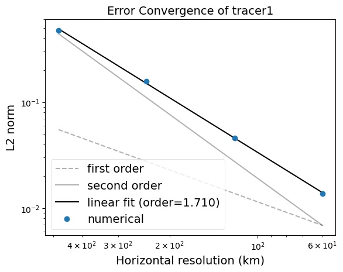

Tendency Terms
Tendencies for updating state variables are computed using functors, which are class objects that can be called like functions. These functors are used within Kokkos parallel loops to compute the full tendency arrays. The following tendency terms are currently implemented:
Name |
Description |
|---|---|
PseudoThicknessFluxDivOnCell |
divergence of pseudo-pseudo-thickness flux, defined at cell center |
PotentialVortHAdvOnEdge |
horizontal advection of potential vorticity, defined on edges |
KEGradOnEdge |
gradient of kinetic energy, defined on edges |
SSHGradOnEdge |
gradient of sea-surface height, multiplied by gravitational acceleration, defined on edges |
VelocityDiffusionOnEdge |
Laplacian horizontal mixing, defined on edges |
VelocityHyperDiffOnEdge |
biharmonic horizontal mixing, defined on edges |
TracerHorzAdvOnCell |
horizontal advection of thickness-weighted tracers |
TracerHighOrderHorzAdvOnCell |
second order horizontal advection of thickness-weighted tracers |
TracerDiffOnCell |
horizontal diffusion of thickness-weighted tracers |
TracerHyperDiffOnCell |
biharmonic horizontal mixing of thickness-weighted tracers |
SfcStressForcingOnEdge |
forcing by surface stress (e.g. wind), defined on edges |
BottomDragOnEdge |
bottom drag, defined on edges |
SurfaceTracerRestoringOnCell |
surface tracer restoring, defined on cells |
Among the internal data stored by each functor is a bool which can enable or
disable the contribution of that particular term to the tendency. These flags
need to be provided in the configuration file:
Tendencies:
ThicknessFluxTendencyEnable: true
Some functors have member variables that can be set by the user by the configuration file. The following are all the user-configurable parameters for the currently available tendency terms:
Term |
Parameter |
Description |
|---|---|---|
PseudoThicknessFluxDivOnCell |
ThicknessFluxTendencyEnable |
enable/disable term |
PotentialVortHAdvOnEdge |
PVTendencyEnable |
enable/disable term |
KEGradOnEdge |
KETendencyEnable |
enable/disable term |
SSHGradONEdge |
SSHTendencyEnable |
enable/disable term |
VelocityDiffusionOnEdge |
VelDiffTendencyEnable |
enable/disable term |
ViscDel2 |
horizontal viscosity |
|
VelocityHyperDiffOnEdge |
VelHyperDiffTendencyEnable |
enable/disable term |
ViscDel4 |
horizontal biharmonic mixing coefficient for normal velocity |
|
DivFactor |
scale factor for the divergence term |
|
TracerHorzAdvOnCell |
TracerHorzAdvTendencyEnable |
enable/disable term |
HorzTracerFluxOrder |
1 for standard linear advection |
|
TracerHighOrderHorzAdvOnCell |
TracerHorzAdvTendencyEnable |
enable/disable term |
HorzTracerFluxOrder |
2 for second order advection algorithm |
|
TracerDiffOnCell |
TracerDiffTendencyEnable |
enable/disable term |
EddyDiff2 |
horizontal diffusion coefficient |
|
TracerHyperDiffOnCell |
TracerHyperDiffTendencyEnable |
enable/disable term |
EddyDiff4 |
biharmonic horizontal mixing coeffienct for tracers |
|
SfcStressForcingOnEdge |
SfcStressForcingTendencyEnable |
enable/disable term |
BottomDragOnEdge |
BottomDragTendencyEnable |
enable/disable term |
BottomDragCoeff |
bottom drag coefficient |
|
SurfaceTracerRestoringOnCell |
SurfaceTracerRestoringEnable |
enable/disable term |
Second Order Horizontal Advection Algorithm
The horizontal advection is done independently within each ocean layer so a two dimensional scheme is required to advect mixing ratios. The second order horizontal advection scheme is described in the paper
William C. Skamarock and Almut Gassmann, “Conservative Transport Schemes for Spherical Geodesic Grids: High-Order Flux Operators for ODE-Based Time Integration” Monthly Weather Review, Vol 139: Issue 9, pp 2962–2975, 2011. doi.org/10.1175/MWR-D-10-05056.1
and only a summary of a few equations from that paper are reproduced here.
The conservative form of the scalar transport equation within a fluid is given in equation (1) of Skamarock and Gassmann,
For higher order flux calculations, higher order derivatives of \(\psi\) are needed and for the user option of TracerHorzAdvOnCell along with HorzTracerFluxOrder set to 2, a quadratic approximation of \(\psi\) is used,
The second order derivatives of \(\psi\) are then combined as shown in equation (11) of Skamarock and Gassmann to get a second order horizontal transport algorithm.
The computation of these second order fluxes is complicated by having to do these computations on a sphere. Figure 2 from the Skamarock and Gassmann paper describs the slight modifications needed to compute the entries of the \(\mathbf{P}\) matrix for a spherical geometry where the distances need to be measured as arc lengths along the surface.
In practice, the convergence of this higher order algorithm on a sphere is slightly below second order. For the advection of a \(\psi\) in the shape of a cosine bell being advected around a sphere and compared with the analytic solution, the spatial convergence for grid refinement is about order 1.7 as shown in Fig. 1:
{kind=link}

Fig. 1 Tracer higer order convergence example of a cosine bell advected on a sphere showing an order 1.71 convergence rate
See Also
Additional information on forcing (currently wind forcing and surface tracer restoring) is detailed in Forcing.